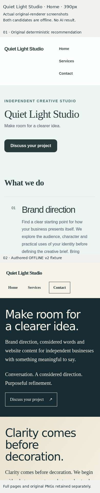
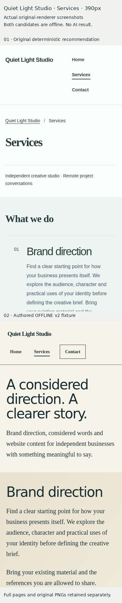
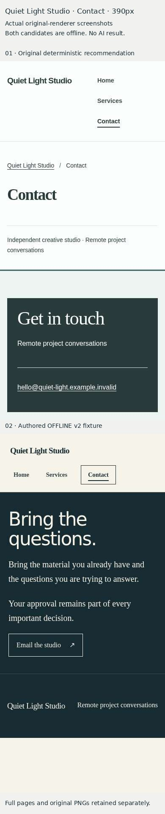

Actual original-renderer evidence. Candidate01 is the deterministic recommendation;02 is a manually authored offline engineering fixture. Neither is a real model result. No professional or owner acceptance is implied.

01 full mobile page 01 full desktop page 02 full mobile page 02 full desktop page
01 full mobile page 01 full desktop page 02 full mobile page 02 full desktop page
01 full mobile page 01 full desktop page 02 full mobile page 02 full desktop pageOriginal full PNGs,320/390/1440/DPR2 checks and provenance: browser run42297957555. Functional source21121ee462b27a77b30089ba69e2adcb28d15182.